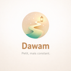

<!doctype html>
<html lang="fr">
<head>
<meta charset="utf-8">
<meta name="viewport" content="width=device-width,initial-scale=1">
<meta name="video-output" content="dawam-q10-bureau.mp4">
<title>Dawam — Au quotidien · Au bureau</title>
<link rel="stylesheet" href="../lib/base.css"><link rel="stylesheet" href="../lib/screens.css"><link rel="stylesheet" href="../lib/ecrans.css"><link rel="stylesheet" href="../tiktok/tk.css">
<!-- Au quotidien avec Dawam — Nassim, 30 ans, au bureau à midi : le rappel de mi-journée, il coche deux actes ; son collègue Thomas se penche, curieux. -->
<style>
#scene{transform-origin:540px 1230px}
#dim{background:#1A1F2E}
.bub{position:absolute;max-width:470px;padding:22px 32px;border-radius:38px;background:#fff;color:#141414;font:800 44px/1.28 var(--tk);
  letter-spacing:-.4px;text-align:center;box-shadow:0 18px 40px -16px rgba(20,24,40,.45)}
.bub::after{content:'';position:absolute;bottom:-26px;width:0;height:0;border-left:22px solid transparent;border-right:22px solid transparent;border-top:30px solid #fff}
.bub.tr::after{right:70px;transform:skewX(-20deg)}
.bub.tl::after{left:70px;transform:skewX(20deg)}
.bub .who{display:block;font:700 26px/1 var(--tk);color:#8A8F9C;margin-bottom:8px;letter-spacing:0}
</style>
</head>
<body>
<div id="viewport"><div id="stage">
  <svg id="scene" class="L" width="1080" height="1920"></svg>
  <div id="dim" class="L full"></div>
  <div id="phoneWrap" class="L" style="left:244px;top:600px;width:592px;height:1246px"></div>
  <div id="black" class="L full" style="background:#000"></div>
</div></div>
<script src="../lib/engine.js"></script><script src="../lib/screens.js"></script><script src="../lib/ecrans.js"></script>
<script src="../lib/cartoon.js"></script><script src="../lib/decor.js"></script><script src="../lib/casting.js"></script><script src="../tiktok/tk.js"></script>
<script>
'use strict';
const R = {};
const HIP = [460, 1250], S = 1.3, TS = 1.26, T_HIP_Y = 1252, T_X = 800, DESK_PHONE = [632, 1196];

// open space de jour : grande baie vitrée sur la ville, Nassim derrière son bureau
function office(svg) {
  svg.innerHTML = `
  <defs>
    <linearGradient id="ofSky" x1="0" y1="0" x2="0" y2="1"><stop offset="0" stop-color="#7EC3F0"/><stop offset=".7" stop-color="#BFE3F7"/><stop offset="1" stop-color="#E4F3FA"/></linearGradient>
    <radialGradient id="ofSun"><stop offset="0" stop-color="#FFF8DC" stop-opacity=".95"/><stop offset=".35" stop-color="#FFF1C2" stop-opacity=".45"/><stop offset="1" stop-color="#FFF1C2" stop-opacity="0"/></radialGradient>
    <linearGradient id="ofLight" x1="0" y1="0" x2="0" y2="1"><stop offset="0" stop-color="#FFFBEF" stop-opacity=".0"/><stop offset="1" stop-color="#FFFBEF" stop-opacity=".22"/></linearGradient>
    <radialGradient id="ofPh"><stop offset="0" stop-color="#FFF1D2" stop-opacity=".8"/><stop offset="1" stop-color="#FFF1D2" stop-opacity="0"/></radialGradient>
    <clipPath id="ofGlass"><rect x="60" y="250" width="960" height="860"/></clipPath>
  </defs>
  <rect width="1080" height="1920" fill="#E9E4DA"/>
  <rect y="0" width="1080" height="200" fill="#F3F0EA"/>
  <rect x="200" y="120" width="680" height="22" rx="11" fill="#FFFFFF" ${OLA}/>
  <!-- baie vitrée -->
  <rect x="40" y="230" width="1000" height="900" rx="10" fill="#C9CED6" ${OLA}/>
  <g clip-path="url(#ofGlass)">
    <rect x="60" y="250" width="960" height="860" fill="url(#ofSky)"/>
    <circle cx="840" cy="380" r="260" fill="url(#ofSun)"/><circle cx="840" cy="380" r="46" fill="#FFF6D6"/>
    <g fill="#FFFFFF" opacity=".85"><ellipse cx="250" cy="360" rx="80" ry="22"/><ellipse cx="300" cy="345" rx="50" ry="24"/><ellipse cx="620" cy="440" rx="70" ry="16"/></g>
    <!-- ville au loin -->
    <path d="M60 1110V800H120V760H170V820H220V700H290V780H340V740H400V830H450V690H520V770H590V720H650V800H700V680H780V760H840V720H900V790H950V740H1020V1110Z" fill="#A9C4DC"/>
    <path d="M60 1110V880H110V840H180V900H240V820H300V870H370V800H440V880H500V840H560V900H620V810H700V860H760V830H830V890H900V850H960V880H1020V1110Z" fill="#87A8C6"/>
    <g fill="#B9D2E6" opacity=".9">
      ${Array.from({ length: 14 }, (_, i) => `<rect x="${82 + i * 68}" y="${900 + (i % 3) * 30}" width="12" height="16"/><rect x="${82 + i * 68}" y="${940 + (i % 2) * 34}" width="12" height="16"/>`).join('')}
    </g>
  </g>
  <rect x="380" y="250" width="14" height="860" fill="#C9CED6"/><rect x="700" y="250" width="14" height="860" fill="#C9CED6"/>
  <rect x="60" y="700" width="960" height="12" fill="#C9CED6"/>
  <rect x="30" y="1120" width="1020" height="20" rx="6" fill="#D6D2CA" ${OLA}/>
  <!-- grande plante au fond à droite -->
  <path d="M1010 1150Q960 1000 990 900M1014 1150Q1060 1010 1050 920M1012 1150Q1000 1040 940 980M1016 1150Q1070 1060 1080 990" stroke="#3E8A5E" stroke-width="18" fill="none" stroke-linecap="round"/>
  <g fill="#4FA06E"><ellipse cx="988" cy="900" rx="22" ry="40" transform="rotate(-10 988 900)"/><ellipse cx="1050" cy="918" rx="22" ry="40" transform="rotate(14 1050 918)"/><ellipse cx="942" cy="978" rx="20" ry="36" transform="rotate(-40 942 978)"/></g>
  <!-- lumière du jour -->
  <rect width="1080" height="1920" fill="url(#ofLight)"/>
  <!-- fauteuils de bureau (dossiers) -->
  <g id="ofChairN"><rect x="${HIP[0] - 118}" y="${HIP[1] - 330}" width="236" height="330" rx="70" fill="#3C4458" ${OLA}/><rect x="${HIP[0] - 92}" y="${HIP[1] - 304}" width="184" height="270" rx="54" fill="#4A536A"/></g>
  <g id="ofThomas"><g id="ofChairT"><rect x="-114" y="-320" width="228" height="320" rx="68" fill="#3C4458" ${OLA}/><rect x="-88" y="-294" width="176" height="262" rx="52" fill="#4A536A"/></g><g id="ofTPerson"></g></g>
  <g id="ofPerson"></g>`;
  const q = s => svg.querySelector(s);
  return { person: q('#ofPerson'), thomas: q('#ofThomas'), tPerson: q('#ofTPerson') };
}

// bureau dessiné dans le repère de Nassim, entre son buste et ses bras : ses mains se posent dessus, Thomas (derrière) est caché par le plateau
function buildDesk(toon) {
  const g = el('g', { transform: `scale(${(1 / S).toFixed(6)}) translate(${-HIP[0]} ${-HIP[1]})` });
  toon.root.insertBefore(g, toon.gUpper);
  g.innerHTML = `
  <!-- écran à gauche (de trois quarts), plante, carnet -->
  <rect x="196" y="1080" width="26" height="100" fill="#8A909C" ${OLA}/><ellipse cx="209" cy="1186" rx="70" ry="14" fill="#7A808C" ${OLA}/>
  <path d="M50 846L352 870L352 1088L50 1100Z" fill="#2E3340" ${OLA}/>
  <path d="M64 862L338 883L338 1074L64 1085Z" fill="#EAF1F8"/>
  <path d="M64 862L338 883L338 906L64 892Z" fill="#4C7BD1"/>
  <g fill="#C7D3E2"><path d="M84 920L200 926L200 940L84 935Z"/><path d="M84 952L250 960L250 972L84 966Z"/><path d="M84 984L230 990L230 1002L84 997Z"/></g>
  <g fill="#5DB585"><rect x="236" y="1010" width="18" height="52"/><rect x="262" y="990" width="18" height="72"/><rect x="288" y="1020" width="18" height="42"/><rect x="314" y="975" width="18" height="87"/></g>
  <path d="M30 1150L70 1150L64 1194L36 1194Z" fill="#E0E6EE" ${OLA}/>
  <path d="M50 1150Q30 1110 40 1086M50 1150Q60 1104 82 1094M50 1150Q48 1112 56 1078" stroke="#4FA06E" stroke-width="10" fill="none" stroke-linecap="round"/>
  <!-- plateau -->
  <path d="M-60 1168H1140V1236H-60Z" fill="#F4EFE6"/>
  <path d="M-60 1168H1140" stroke="#2A1E2C" stroke-opacity=".25" stroke-width="4"/>
  <rect x="-60" y="1232" width="1200" height="22" fill="#C9A27A" ${OLA}/>
  <rect x="-60" y="1252" width="1200" height="700" fill="#E3DCD0" ${OLA}/>
  <path d="M-60 1300H1140" stroke="#D4CCBE" stroke-width="5"/>
  <rect x="120" y="1330" width="300" height="140" rx="16" fill="#D8D0C2" ${OLA}/><rect x="240" y="1388" width="60" height="12" rx="6" fill="#B8AE9E"/>
  <!-- clavier, souris, mug, carnet -->
  <path d="M368 1184L552 1184L566 1214L354 1214Z" fill="#DADDE3" ${OLA}/>
  <g fill="#B9BEC8">${Array.from({ length: 9 }, (_, i) => `<rect x="${372 + i * 20}" y="1191" width="14" height="7" rx="2"/><rect x="${368 + i * 21}" y="1202" width="15" height="7" rx="2"/>`).join('')}</g>
  <ellipse cx="300" cy="1206" rx="18" ry="11" fill="#DADDE3" ${OLA}/>
  <path d="M700 1176L760 1180L756 1222L692 1218Z" fill="#F2C14E" ${OLA}/><path d="M708 1186L748 1189" stroke="#FFFFFF" stroke-width="4" opacity=".6"/>
  <path d="M838 1120L902 1120L898 1196Q870 1206 842 1196Z" fill="#E86A4F" ${OLA}/>
  <path d="M900 1136Q930 1140 926 1162Q922 1180 898 1178" fill="none" stroke="#2A1E2C" stroke-opacity=".5" stroke-width="13"/>
  <path d="M900 1136Q930 1140 926 1162Q922 1180 898 1178" fill="none" stroke="#E86A4F" stroke-width="6"/>
  <ellipse cx="870" cy="1122" rx="30" ry="7" fill="#6B3F2A"/>
  <path id="ofSteam" d="M858 1100Q850 1080 862 1064Q874 1048 866 1030M882 1100Q874 1078 886 1062" stroke="#FFFFFF" stroke-width="5" fill="none" stroke-linecap="round" opacity=".7"/>
  <!-- téléphone posé -->
  <g id="ofDeskPhone"><rect x="-15" y="-29" width="30" height="58" rx="7" fill="#1d1d1f" stroke="#2A1E2C" stroke-width="4"/><rect id="ofPhScr" x="-11" y="-25" width="22" height="50" rx="4" fill="#2b2b30"/></g>
  <circle id="ofPhGlow" cx="${DESK_PHONE[0]}" cy="${DESK_PHONE[1]}" r="170" fill="url(#ofPh)" opacity="0"/>`;
  const q = s => g.querySelector(s);
  return { g, phone: q('#ofDeskPhone'), phScr: q('#ofPhScr'), phGlow: q('#ofPhGlow'), steam: q('#ofSteam') };
}

function build() {
  const st = $('#stage');
  R.L = office($('#scene'));
  R.t = new Toon(R.L.tPerson, Object.assign({}, CAST.thomas, { legs: 'none' }));
  R.n = new Toon(R.L.person, Object.assign({}, CAST.nassim, { legs: 'none' }));
  R.D = buildDesk(R.n);
  R.who = el2(st, '<div class="c" style="top:250px"><div class="sticker white" style="position:relative;display:inline-block;font-size:34px">💼 Nassim, 30 ans · 12 h 30</div></div>');
  R.c1 = cap(st, 'Pause de midi au bureau 💼', 'w', 350);
  R.c2 = cap(st, 'Le rappel de mi-journée ☀️', 'w', 330);
  R.c3 = cap(st, '2 actes entre deux mails 📩', 'k', 330);
  R.c4 = cap(st, 'Quand ton collègue\nvoit ton écran 👀', 'w', 260);
  R.notif = el2(st, `<div class="bignotif" style="top:470px"><div style="flex:1"><div class="nt">Dawam ☀️<span>maintenant</span></div><div class="nb">Mi-journée, le bon moment pour cocher tes actes</div></div></div>`);
  R.phone = makePhone([scrAccueil('acc', { hello: 'As-salāmu ʿalaykum,', name: 'Nassim', sections: [
    { label: "À l'aube", items: [{ e: '🌄', t: "Séance de l'aube", xp: 20 }] },
    { label: 'Dans la journée', items: [{ e: '📖', t: 'Lecture du Coran', xp: 15 }, { e: '✨', t: 'Bénédictions sur le Prophète ﷺ', xp: 10 }] },
    { label: 'Ce soir', items: [{ e: '🌙', t: 'Invocations du soir', xp: 10 }] },
  ] })]);
  $('#phoneWrap').appendChild(R.phone);
  R.bq = el2(st, '<div class="bub tr" style="right:110px;top:470px"><span class="who">Thomas</span>C\'est quoi ton appli ? 👀</div>');
  R.ba = el2(st, '<div class="bub tl" style="left:80px;top:520px;max-width:500px"><span class="who">Nassim</span>Mes rappels pour rester constant 🤍</div>');
  R.bl = el2(st, '<div class="bub tr" style="right:110px;top:500px"><span class="who">Thomas</span>Envoie le lien ! 🙌</div>');
  R.end = tkEnd(st);
}

// touchers sur l'accueil : « Lecture du Coran » puis « Bénédictions sur le Prophète ﷺ »
const TAP1 = 7.25, TAP2 = 8.35;
const DONE = [-1, TAP1 + .05, TAP2 + .05];

function scene(t) {
  // cadrage : serré sur Nassim, puis on élargit quand Thomas arrive
  const wide = P(t, 9.2, 1.0, E.ioC);
  const z = lerp(1.62, 1.38, wide) + .04 * P(t, 0, 9, E.lin);
  const tx = lerp(132, -124, wide), ty = lerp(170, 150, wide);
  $('#scene').style.transform = `translate(${tx.toFixed(2)}px,${ty.toFixed(2)}px) scale(${z.toFixed(4)})`;
  // phases : tape au clavier → regarde le téléphone → le prend → le tient → le montre à Thomas
  const typing = t < 3.0;
  const reach = P(t, 4.9, .45, E.ioC) * (1 - P(t, 5.5, .4, E.ioC));
  const hold = P(t, 5.5, .45, E.ioC);
  const picked = t >= 5.45;
  const show = P(t, 11.9, .6, E.ioC) * (1 - P(t, 14.0, .5, E.ioC));
  const k1 = typing ? Math.max(0, Math.sin(t * 19)) * 5 : 0, k2 = typing ? Math.max(0, Math.sin(t * 23 + 1.3)) * 5 : 0;
  const settle = P(t, 3.0, .5, E.ioC);
  const sp = [(DESK_PHONE[0] - HIP[0]) / S, (DESK_PHONE[1] - HIP[1]) / S - 6];
  let hL = [lerp(-32, -40, settle), lerp(-44 - k1, -40, settle)];
  let hR = [lerp(34, 40, settle), lerp(-44 - k2, -40, settle)];
  hR = [lerp(hR[0], sp[0], reach), lerp(hR[1], sp[1], reach)];
  hL = [lerp(hL[0], -18, hold), lerp(hL[1], -66, hold)];
  hR = [lerp(hR[0], 16, hold), lerp(hR[1], -68, hold)];
  hL = [hL[0] + 34 * show, hL[1] - 4 * show];
  hR = [hR[0] + 40 * show, hR[1] - 8 * show];
  const lean = 11 * reach + 6 * show + Math.sin(t * 1.7) * .7 - (typing ? 2 : 0);
  let face;
  if (t < 2.8) face = { look: [-9, 3], mouth: 'flat', brow: .1 };
  else if (t < 4.9) face = { look: [8, 7], brow: .4 * P(t, 2.8, .2), mouth: t < 3.6 ? 'o' : 'smile' };
  else if (t < 5.6) face = { look: [8, 7], mouth: 'small' };
  else if (t < 9.0) face = { look: [0, 5], mouth: 'smile' };
  else if (t < 10.0) face = { look: [0, 5], eyes: 'happy', mouth: 'smile' };
  else if (t < 11.0) face = { look: [9, 0], brow: .5, mouth: 'o' };                  // surpris : Thomas est là
  else if (t < 11.9) face = { look: [9, 0], mouth: 'grin', brow: .2 };
  else if (t < 14.0) face = { look: [8, 2], mouth: t < 13.4 && t % .5 < .25 ? 'open' : 'smile', brow: .25 };
  else face = { eyes: 'happy', mouth: 'grin' };
  const turn = .35 * P(t, 10.0, .3) ;
  const pose = { x: HIP[0], y: HIP[1], s: S, lean, t, turn, face, hands: { L: hL, R: hR },
    phone: picked ? 'both' : null, phoneAng: 24 * show, glow: .95, faceLight: .25, dy: picked ? 3 * hold : 0 };
  R.n.set(pose);
  // téléphone sur le bureau : vibre et s'allume
  const lit = t < 5.45 ? P(t, 2.7, .2) : 0;
  const buzz = t > 2.7 && t < 3.6 ? Math.sin(t * 80) * 2.2 : 0;
  vis(R.D.phone, !picked);
  R.D.phone.setAttribute('transform', `translate(${f1(DESK_PHONE[0] + buzz)} ${DESK_PHONE[1]}) rotate(-80)`);
  R.D.phScr.setAttribute('fill', mix('#2b2b30', '#FFF4DC', lit));
  R.D.phGlow.setAttribute('opacity', (.8 * lit).toFixed(3));
  R.D.steam.setAttribute('transform', `translate(${f1(Math.sin(t * 1.6) * 4)} ${f1(-((t * 14) % 10))})`);
  R.D.steam.setAttribute('opacity', (.45 + .25 * Math.sin(t * 2.1)).toFixed(2));
  // Thomas arrive sur son fauteuil à roulettes et se penche
  const arr = P(t, 9.2, .9, E.outC);
  const tx2 = lerp(1340, T_X, arr) + Math.sin(P(t, 9.2, 1.2) * Math.PI) * 6;
  R.L.thomas.setAttribute('transform', `translate(${f1(tx2)} ${T_HIP_Y})`);
  const talkQ = t > 10.1 && t < 11.6, talkL = t > 13.8 && t < 14.7;
  const gest = P(t, 13.7, .35, E.outB2) * (1 - P(t, 15.0, .4));
  let tface;
  if (t < 10.0) tface = { look: [-10, 4], brow: .4, mouth: 'smile' };
  else if (t < 11.9) tface = { look: [-10, 5], brow: .55, mouth: talkQ && t % .44 < .22 ? 'open' : 'small' };
  else if (t < 13.7) tface = { look: [-10, 6], brow: .7, mouth: 'o' };
  else tface = { look: [-8, 2], eyes: t > 14.7 ? 'happy' : 'open', mouth: talkL && t % .44 < .22 ? 'open' : 'grin', brow: .4 };
  const tlean = -lerp(0, 9, P(t, 9.9, .5, E.ioC)) - 4 * P(t, 11.9, .5, E.ioC) + 6 * gest;
  R.t.set({ x: 0, y: 0, s: TS, lean: tlean, turn: -.35, t: t + 1.1, face: tface,
    hands: { L: [-30, 30], R: [lerp(30, 96, gest), lerp(30, -158, gest) + Math.sin(t * 9) * 4 * gest] } });
}

function render(t) {
  T($('#black'), { op: 1 - P(t, 0, .5, E.ioC) });
  scene(t);
  pop(R.who, t, .15, 3.0);
  pop(R.c1, t, .35, 3.0);
  const ni = P(t, 2.9, .55, E.outB), no = P(t, 5.2, .35, E.inC);
  T(R.notif, { y: lerp(-700, 0, ni) - 700 * no, op: ni > 0 && no < 1 ? 1 : 0 });
  pop(R.c2, t, 3.2, 5.9);
  // gros plan : il coche deux actes, l'anneau et « Encore N actions » descendent
  T($('#dim'), { op: .5 * P(t, 5.9, .5) * (1 - P(t, 9.3, .5)) });
  const pin = P(t, 6.0, .9, E.outX), pout = P(t, 9.25, .6, E.inC);
  const pw = $('#phoneWrap');
  if (vis(pw, pin > 0 && pout < 1)) T(pw, { y: lerp(1400, 0, pin) + 1500 * pout, rx: lerp(28, 0, pin) + 18 * pout, ry: 4 * pin, r: lerp(7, 0, pin), s: 1.0 });
  drawAccueil($('#acc'), t, DONE, t < TAP1 + .2 ? 1 : 2);
  drawTaps(R.phone, t, [[TAP1, 486, 660], [TAP2, 486, 778]]);
  pop(R.c3, t, 6.3, 9.25);
  pop(R.c4, t, 9.9, 15.0);
  pop(R.bq, t, 10.1, 12.05);
  pop(R.ba, t, 12.05, 13.75);
  pop(R.bl, t, 13.75, 15.0);
  drawEnd(R.end, t, 15.0, 540, 1100);
}
boot({ duration: 17.2, build, render });
</script>
</body>
</html>
